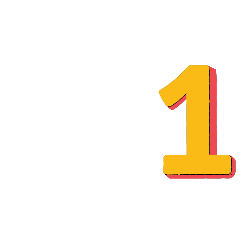
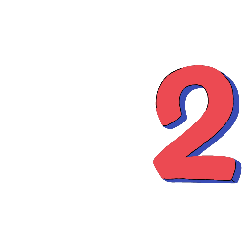
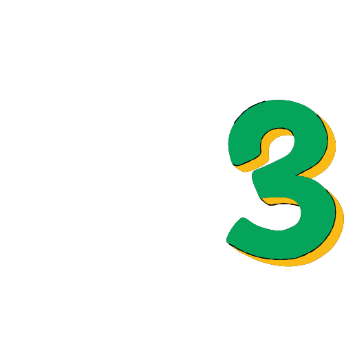
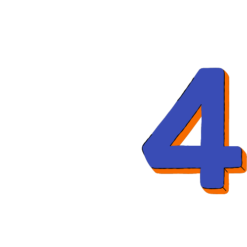
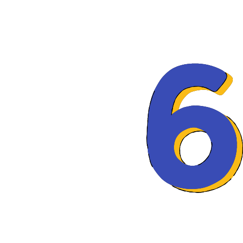
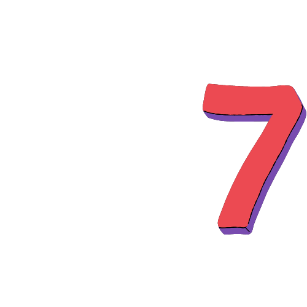
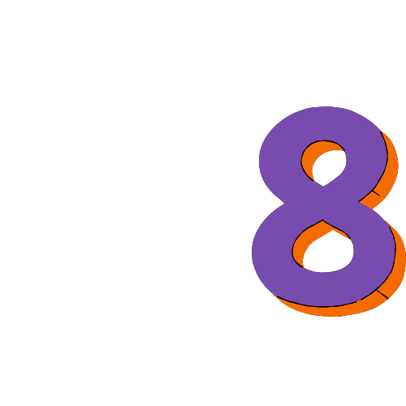
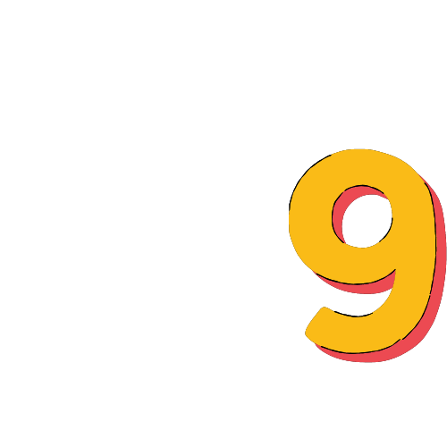

USABILIDAD
La usabilidad web es el grado de facilidad de uso que tiene una página web para los visitantes que entran e interactúan con ella.
Una web con una buena usabilidad es aquella que permite a los usuarios una interacción sencilla, intuitiva, agradable y segura.

CICLO DE VIDA DE USABILIDAD
Consiste en analizar, estructurar, organizar y visualizar contenidos para facilitar la interacción entre los usuarios y los productos o servicios que pueden tomar la forma de aplicaciones, objetos o sistemas. Su implementación posibilita una experiencia enfocada en el usuario y su contexto, enfocándose en la utilidad, el atractivo y la accesibilidad que facilitan el uso del producto, permitiendo que el producto sea aprovechado en su totalidad. La usabilidad es la calidad de un sistema en términos de: Usabilidad: múltiples formas de intercambiar información entre usuarios y sistemas Fácil de aprender para los nuevos usuarios, lo que garantiza una interacción eficaz y el máximo beneficio. "El diseño no es solo como se ve o se siente...el diseño es cómo funciona...". Steve Jobs Un factor que influye en la experiencia del usuario es la calidad que el usuario percibe al interactuar con el producto. Entonces nos preguntamos: ¿El producto es visualmente atractivo?, ¿La información es fácil de leer? ¿Entiendes qué hacer en él? Otro factor que influye en la experiencia del usuario es la facilidad para aprender a utilizar el producto. Por lo tanto, nos preguntamos: ¿Este producto es fácil de entender? En términos de si necesita instrucciones, ¿las secciones están claramente separadas y comprende lo que debe hacer dentro del producto? Otro factor es la eficiencia de uso relacionada con la pregunta "¿Puedo ir de A a B rápidamente?" ¿Tu producto es lento? ¿Tu sistema es correcto? es mi idioma? Todo esto afecta la eficiencia del uso de este producto. Finalmente, es importante considerar la satisfacción subjetiva del usuario. Esto se traduce en una sensación de logro o hay una respuesta del producto que hace que el usuario esté feliz de haber logrado algo. La experiencia de usuario es la disciplina de adaptarse a las nuevas tecnologías sin perder de vista el factor humano. Identificar las necesidades de los usuarios al principio de la fase de desarrollo ayuda a definir el alcance del proyecto y establecer objetivos claros. Esto ahorra un esfuerzo adicional ya que el proyecto tiene una dirección clara. Cuando los usuarios se sienten cómodos usando su producto, encuentran lo que buscan y disfrutan de la experiencia del usuario, es más probable que permanezcan con su producto y tengan menos necesidad de comunicarse con sus competidores. Una buena experiencia de usuario conduce a un mayor tráfico y uso del producto, lo que genera mayores tasas de conversión y mayores ventas. Cuando se trata de usabilidad, es importante considerar los factores técnicos que afectan su implementación, pero no quiere que comprometan la calidad para sus usuarios. La investigación o el análisis de la usabilidad del producto debe centrarse en los usuarios y sus necesidades, e ir más allá de las limitaciones de los dispositivos en los que se implementan. Detalla aspectos específicos relacionados con la organización de la información, tales como: Ejemplos: ambigüedad, heterogeneidad, homogeneidad. Realizamos propuestas de organización de la información en sitios web e intranets. Se ha reflexionado mucho sobre los diversos esquemas y estructuras existentes de organización de la información. Se lleva a cabo un sistema de navegación y sus diferentes tipos de recorridos. Finalmente, se elaboró una guía de estilo para evaluar la arquitectura de información y la usabilidad de una página. Define y describe los pasos básicos para diseñar y evaluar productos de información escritos para la World Wide Web (WWW).

USABILIDAD Y ACESIBILIDAD
Una de las mejores herramientas que tienes son las acciones y respuestas que existen entre tú y tu producto. La interacción se refiere a cómo los usuarios navegan e interactúan con su producto. La retroalimentación se refiere a la respuesta del producto a las acciones del usuario. Por ejemplo, cuando un usuario hace clic en un botón de compra, el producto muestra una pantalla con opciones de compra en respuesta a la acción del usuario. La tarea principal de la usabilidad es crear una experiencia funcional, intuitiva y atractiva para los usuarios y alentarlos a usarla.

INGENIERÍA DE USABILIDAD
Un conjunto de conceptos y técnicas para planificar, implementar y probar los objetivos de usabilidad de un sistema. [Rosson y Carroll, 2002] intentan capturar con precisión los criterios utilizados para juzgar la usabilidad de un producto. Introducir medidas de usabilidad en todas las etapas de desarrollo. Problema: Definir métricas que dependen de acciones de usuarios muy específicas en circunstancias muy específicas. Problema: proporcionar un medio para cumplir con las especificaciones de usabilidad, no necesariamente la usabilidad real.
CICLO DE VIDA DE INGENIERÍA DE USABILIDAD
- Análisis de Perfil de Usuario.
- Análisis de tareas
- Definición de objetivos de usabilidad
- Diseño de sistemas
- Implementación de prototipos
- Realización de pruebas

DESCRIPCION DEL CICLO DE VIDA
Si no se hace el rediseño, entraremos en la fase de implementación. Y está en constante mejora y adaptación permanente. Análisis de perfiles de usuarios como parte del diseño de la metodología a desarrollar, definición de las características de quienes utilizan el sitio y conocer sus necesidades, e ingeniería paramétrica del entorno del sitio como ingeniero de parámetros para aplicar el esquema y estructura de la información contenida en el sitio para objetivos de usabilidad características específicas del usuario para diseñar como. El enfoque general de la usabilidad está en el usuario cuando lo que se hace tiene sentido y se logra. 1. Análisis de Requerimientos: Objetivos que se persiguen en diseño y usabilidad, análisis de tareas. objetivos de usabilidad. 2. Desarrollo: 1er nivel, reutilizando el proceso utilizado para realizar el diseño, maquetando el modelo conceptual, iterando hasta producir un diseño específico, nivel 3, diseño de interfaz de usuario, siendo cumplido Hasta que se evalúen los objetivos y requisitos, la fase de evaluación deben introducirse, aplicarse todos los requisitos y reevaluarse constantemente todas las fases y todos los procesos. 3. Implementación ISO 9241: Usabilidad, atributos que deben cumplir los sitios web, eficacia, eficiencia y satisfacción, la eficacia cumple con la precisión, cada atributo tiene propiedades que deben cumplir, la eficacia es precisa Un método matemático de evaluación, que debe completarse con una cantidad, el aspecto se evalúa con la precisión con la que se visita el sitio web dando un valor numérico como un porcentaje. Técnicas de encuestas y preguntas de los usuarios para obtener retroalimentación sobre las intranets probadas. Pruebas de usuario: haga una serie de preguntas específicas sobre ciertos aspectos de su experiencia en la intranet. Preguntas de usabilidad para los usuarios: Identidad: Pudimos identificar de dónde provino la aplicación, quién fue la entidad detrás del desarrollo de la información, quién fue el responsable y quién lo indicó. La empresa de la aplicación ¿Puedes identificar la? *Contenido: información relacionada con lo que muestra la intranet cuando los usuarios buscan lo que muestra la intranet cuando visitan el sitio web. * Navegación: me resultó fácil moverme de una sección a otra y los menús desplegables eran sencillos. Una vez que la información se muestra en gráficos y estructuras, puede ingresar opciones y salir fácilmente. La fuente, el tamaño y el diseño se veían bien. * Gráficos web: color, tamaño. * Buscar: Proporcione comentarios sobre los chats que los usuarios han tenido con los administradores del sitio, si hay una opción de búsqueda para acceder a la sección Comentarios de la página. *utilidad. Si les gustó, cumplí con sus expectativas para sus necesidades.

DISEÑO WEB CENTRADO EN EL USUARIO
Responsable de analizar las interacciones y experiencias de los usuarios con los productos o servicios y desarrollar soluciones para su mejora. Su función es generar experiencias de usuario con un enfoque humano. Hay tres características fundamentales que componen la experiencia del usuario. Una es la usabilidad o la forma en que los usuarios exploran el producto, la segunda es la percepción o la forma en que los usuarios reaccionan a las propiedades visuales del producto, y la tercera es la experiencia o interacción entre los usuarios y el producto, denominada acción. Cuando se habla de usabilidad, es importante considerar si el producto es funcional. Por ejemplo, los usuarios pueden navegar intuitivamente dentro del producto usando elementos disponibles como botones bien definidos. Otro aspecto importante de la usabilidad es la navegación predecible del producto. Un claro ejemplo lo podemos ver en el uso de los menús de navegación. Aquí sabemos que cuando se hace clic en una de las opciones, se mostrará la opción seleccionada resultante.

MÉTODOS DE EVALUACIÓN DE USABILIDAD
Una técnica para agregar datos de interacciones entre usuarios finales y productos. Se ha sugerido que el proceso de evaluación involucra varias acciones dependiendo del método de evaluación a realizar. Después de la inspección, que es el método de evaluación más utilizado, los métodos empíricos y de investigación han demostrado que diferentes evaluadores que observan la misma interfaz de usuario obtienen resultados diferentes, incluso cuando utilizan la misma técnica de evaluación. Está claro que las cosas pueden cambiar mucho. la metodología describe el sistema de evaluación de los resultados. Los métodos de evaluación de la usabilidad se pueden categorizar de acuerdo con muchos criterios, y los estudios que se han realizado muestran que aún hoy no existe un acuerdo uniforme sobre la categorización de estos métodos, y varios autores e investigadores definen su propia categorización. La usabilidad se evalúa combinando atributos de diferentes definiciones. Esto significa crear un nuevo método de evaluación basado en la dimensión seleccionada. 1. Prototipo Tienes evaluadores y usuarios a los que se les presenta un prototipo de tu sitio web. Los evaluadores son muy cuidadosos al realizar cambios y mejoras en esta etapa del proyecto, ya que el usuario tiene que interactuar con el prototipo y decir lo que piensa al respecto. experiencia de usuario positiva. 2 cuestionarios Consiste en una serie de preguntas que el evaluador dirige al usuario y que al final de la prueba se le formulan para obtener datos cuantitativos según una puntuación y una escala en función de las respuestas dadas. 3. Experimento: Usar registros para analizar los problemas de los usuarios e identificar los problemas que tienen con el sitio web

REFERENCIAS BIBLIOGRÁFICAS
• Abran, Khelifi, A., Suryn, W. y Seffah, A. (2003) Integración del modelo de usabilidad ISO. Actas de la 11ª Conferencia Internacional sobre Gestión de la Calidad del Software (págs. 12-14). Alonso-Ríos, V. (2009). Usabilidad: importante análisis y taxonomía. Revista internacional de interacción humano-computadora, 26 (1), 51-55. • Banne, S. (2009). Pruebas de usabilidad de los sistemas de información de salud pública basados en la web. • Pruebas de usabilidad: Una revisión de algunos aspectos metodológicos y técnicos del método. Revista Internacional de Informática Médica, 79(4), e18-e23.